Understanding Healthcare Systems, Stakeholders, and Data Sources
Opening scenario
A quality director at a regional health system is asked a simple question in a Monday meeting: “Are our diabetic patients getting the follow-up they need?”
She has more data than she can count, but each system sees only one slice of care:
- The appointment system knows who was scheduled.
- The emergency department system knows who came in through the door.
- The billing system knows what was submitted to each payer.
- A patient survey knows how people felt about their visit.
- A care registry knows which patients have a gap in care.
None of these systems was built to answer her question, and no two describe a patient in quite the same way. Before she can compute a single number, she has to know where each piece of data comes from, who produced it, and what it was originally for. That is the work of this chapter.
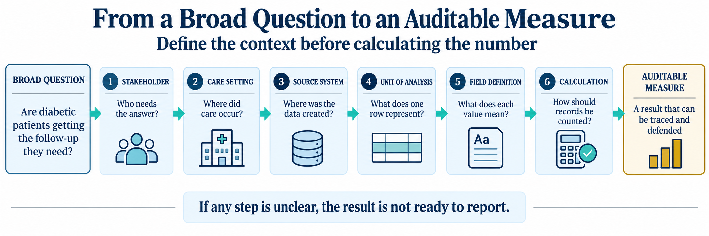
By the end of this chapter, you will be able to:
- Describe how care is delivered across the main healthcare settings.
- Identify the major stakeholders and the questions each one asks of data.
- Trace a piece of data back to the source system that produced it.
- Distinguish a dimension table from a fact table, and primary use from secondary use.
Key concepts
Data does not appear from nowhere. Every value in a healthcare dataset was created by a person or a device at a specific moment in a specific part of the system, and it was created for a reason that usually had nothing to do with analytics.
To read any field safely, anchor yourself with three questions:
- Who created this value?
- Where in the system was it created?
- Why was it created in the first place?
If you understand that origin, the data makes sense. If you ignore it, you will misread the numbers. Biomedical informatics treats these origins, who recorded a value and why, as basic facts about the data rather than footnotes (Shortliffe & Cimino, 2014). This chapter is about origin.
The healthcare system is many systems
The phrase healthcare system suggests one smooth machine. In practice it is a loose network of settings that each run on their own rules, staff, and software. A care setting is the place and mode in which care happens. Ambulatory clinics handle scheduled visits. Emergency departments handle unscheduled, undifferentiated arrivals. Hospitals handle admitted patients who stay overnight. Care management teams work with patients between visits, often by phone. Each setting produces a different kind of record because each setting does a different kind of work.
This matters because the setting shapes the data. An appointment record has a scheduled time and a no-show flag because scheduling is the whole point of an ambulatory clinic. An emergency record has a door time and a triage acuity because speed and severity are the whole point of an emergency department. You will not find a no-show flag in emergency data, and you will not find a triage acuity in appointment data. The columns follow the work.
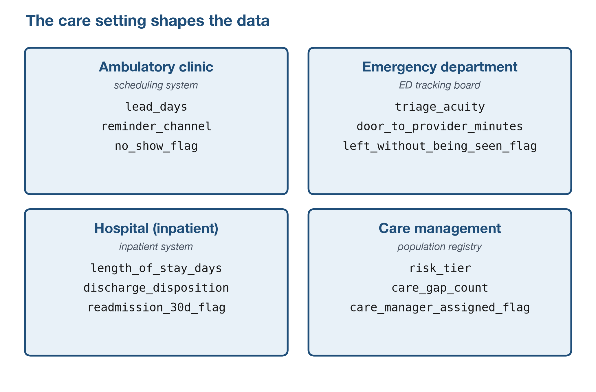
The care setting determines what data exists. Before you analyze a table, ask which setting produced it and what that setting was trying to accomplish.
The continuum of care
The settings above are not separate boxes. A single patient moves through several of them over time, and clinicians call that movement the continuum of care: prevention and primary care, ambulatory visits, urgent and emergency care, inpatient admission, and post-acute care such as a skilled nursing facility, home health, or a follow-up visit back in primary care.
The continuum matters to an analyst because most risk in healthcare data sits at the seams between settings, not inside any one of them. Transitional-care literature frames this handoff work as deliberate actions to keep care coordinated as patients move across settings (Coleman, 2003). Researchers describe three kinds of continuity a strong handoff must preserve (Haggerty et al., 2003):
- Informational continuity: the next clinician has the relevant history.
- Relational continuity: trusted clinical relationships continue over time.
- Management continuity: the care plan and responsibilities carry forward.
Figure 3 follows one patient across the continuum using fields you
will meet again later in the book. In
datasets/DS4_inpatient_clean.csv, you can inspect the
inpatient-to-post-acute handoff in four quick checks:
discharge_disposition: where the patient went next.snf_discharge_flag: whether skilled nursing follow-up was needed.home_health_ordered_flag: whether home health services were ordered.followup_within_7d_flag: whether the loop was closed quickly after discharge.
A gap in any one of these fields, a discharge summary that never reaches primary care, or a home health order that is never scheduled, is where continuity breaks and readmission risk rises.
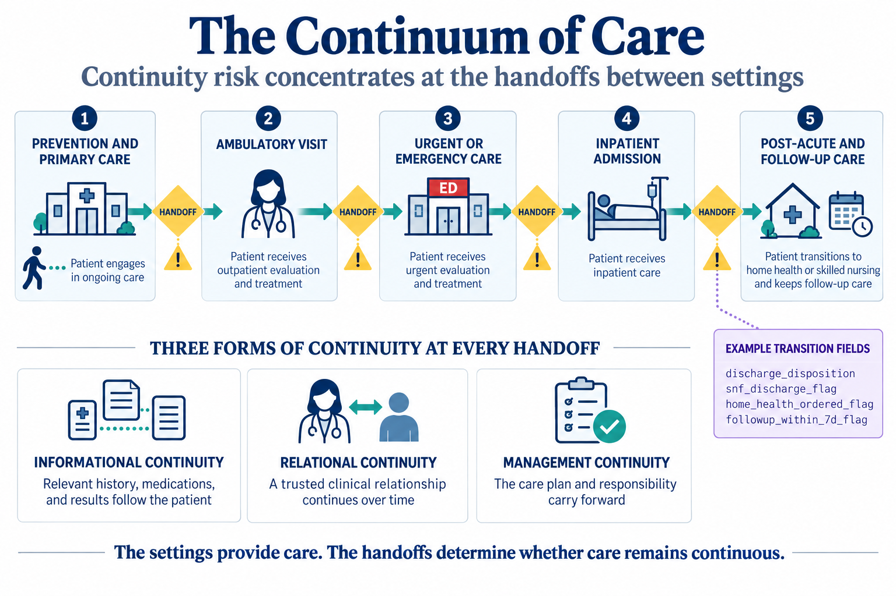
Most of what goes wrong in healthcare data happens at a handoff, not inside a single setting. When you see a gap or an inconsistency, ask which transition produced it before you assume the record itself is wrong.
The three central stakeholders: patients, payers, and providers
Before you meet the long list of people who use healthcare data, learn the three parties the whole system is built around. A patient receives care. A provider, such as a hospital, a clinician, or a pharmacy, delivers that care and documents it. A payer, such as a private insurer, a self-funded employer, Medicare, or Medicaid, finances the care and administers coverage and payment. Almost every dataset in this book is produced by one of these three parties doing its ordinary work, so knowing which one created a record tells you a great deal about what the record was for.
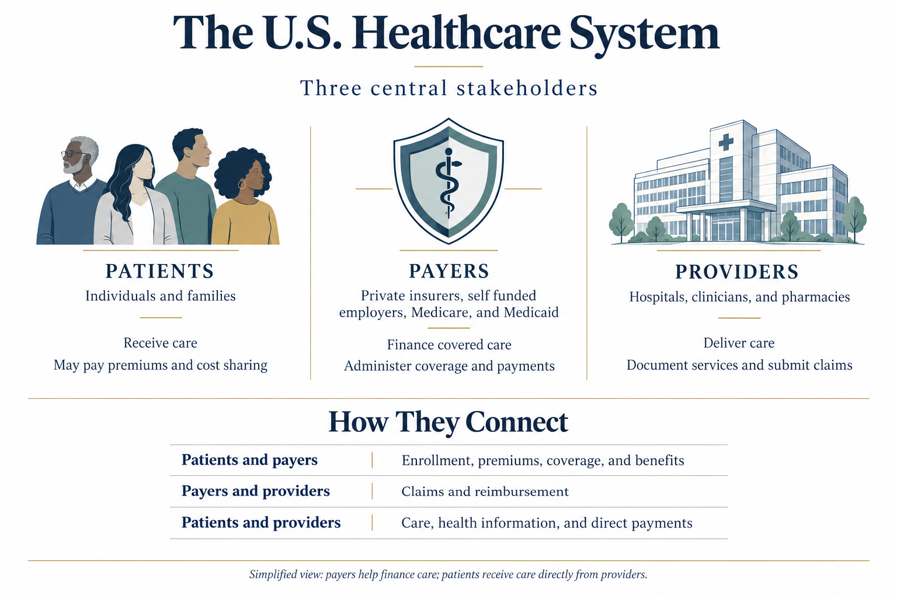
What makes these three interesting to an analyst is not the boxes but the arrows between them, because each relationship generates its own trail of data:
- Patient to payer: enrollment, premiums, coverage, and benefits, producing eligibility and membership records.
- Payer to provider: claims and reimbursement,
producing payment-adjudication trails such as
datasets/DS5_claim_header_clean.csv. - Patient to provider: care delivery, health
information, and direct payments, producing clinical and scheduling
records such as
datasets/DS2_appointments_clean.csvanddatasets/DS4_inpatient_clean.csv.
The same real event, one visit, can appear from three angles at once: as care the patient received, as a service the provider documented, and as a claim the payer adjudicated.
Patients receive care, providers deliver it, and payers finance it. Most healthcare data is a by-product of the transactions between these three parties, so identifying which relationship produced a record is the fastest way to understand what it can and cannot tell you.
Stakeholders and the questions they ask
Those three parties are the frame, but in day-to-day analytics the people who ask questions of the data are more specific. A stakeholder is anyone with a stake in what the data says. The same dataset serves several stakeholders at once, and each one arrives with a different question and a different tolerance for being wrong:
- Clinician: is care safe and effective for this patient?
- Operations manager: are patients moving through the department without delay?
- Finance leader: is the organization paid fairly and on time?
- Public health team: is the population getting healthier?
- Patient: was the visit worth the trip?
A fifth kind of stakeholder does something the others do not: it can attach a rule, and money, to a number. A regulator, such as the Centers for Medicare & Medicaid Services (CMS) or the National Committee for Quality Assurance (NCQA), defines how a measure must be calculated and can tie payment or ratings to the result.
You can think of regulator logic in three steps:
- Define the measure formula precisely.
- Compare performance to a benchmark.
- Attach a consequence, payment, rating, or both, to the result.
CMS’s Hospital Readmissions Reduction Program is a concrete example: under Section 1886(q) of the Social Security Act, CMS reduces a hospital’s Medicare payments, across every admission in that fiscal year, when its risk-adjusted 30-day readmission rate for specific conditions such as heart failure or pneumonia exceeds the national benchmark; the maximum reduction is 3 percent of base payments (Centers for Medicare & Medicaid Services, n.d.). NCQA’s HEDIS measures play a similar role for health plans, defining more than 90 measures across six domains of care so that results can be compared the same way every year (National Committee for Quality Assurance, n.d.).
A readmission_30d_flag, such as the one in
datasets/DS4_inpatient_clean.csv, is a single column but
supports different stakeholder questions:
- Clinician: did the discharge plan hold?
- Care manager: did post-discharge follow-up happen?
- Regulator (for example CMS): how does this result affect payment?
None of these readings is wrong. Each is the same fact seen through a different stakeholder question.
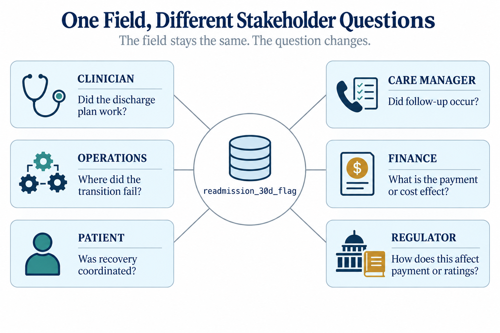
The same field can be read correctly in more than one way. A
readmission_30d_flag is a clinical signal, an operational
to-do, and a regulatory payment input all at once; ask which stakeholder
is asking before you decide what a number means.
These questions pull on the same records in different directions. A missed diabetes appointment is an access problem to the operations manager, a quality risk to the clinician, and a future cost to the finance leader. The persistent gap between the care patients receive and the care they could receive is what these competing measures ultimately try to close (Institute of Medicine, 2001).1 Recall from Chapter 1 that good analysts see how metrics connect across the system. Knowing the stakeholder tells you which question the number is meant to answer, and that keeps you from reporting the right figure for the wrong purpose.
Source systems and the two uses of data
Chapter 1 listed the major source systems in healthcare: scheduling, EHRs, laboratory and diagnostic systems, claims and billing, pharmacy, patient-reported sources, and registries.
In this chapter’s teaching datasets, systems in scope are:
- Scheduling
- ED tracking
- Claims and billing
- Survey and registry sources
- Reference dimensions from EHR and contract/facility master data
Systems out of scope in this chapter, but governed by the same logic, are pharmacy and laboratory systems.
A source system is the software where a piece of data is first created and where it does its original operational job, such as a scheduling system, an electronic health record, a billing platform, or a care-management registry.
Data in a source system serves a primary use, the operational job it was built for. When you pull that same data into analytics, you are putting it to a secondary use.
- Primary use examples: scheduling data books visits; billing data gets claims paid.
- Secondary use examples: appointment data measures no-show rates; claims data tracks denial patterns.
That gap is where most errors begin. A billing record marks a claim as denied to trigger a rework queue, not to measure clinical quality, so a denial flag means “the payer said no,” not “the care was wrong.” Interoperability rules now make it far easier to move records between systems for secondary use, which makes understanding their origin more important, not less (Office of the National Coordinator for Health Information Technology, 2020).
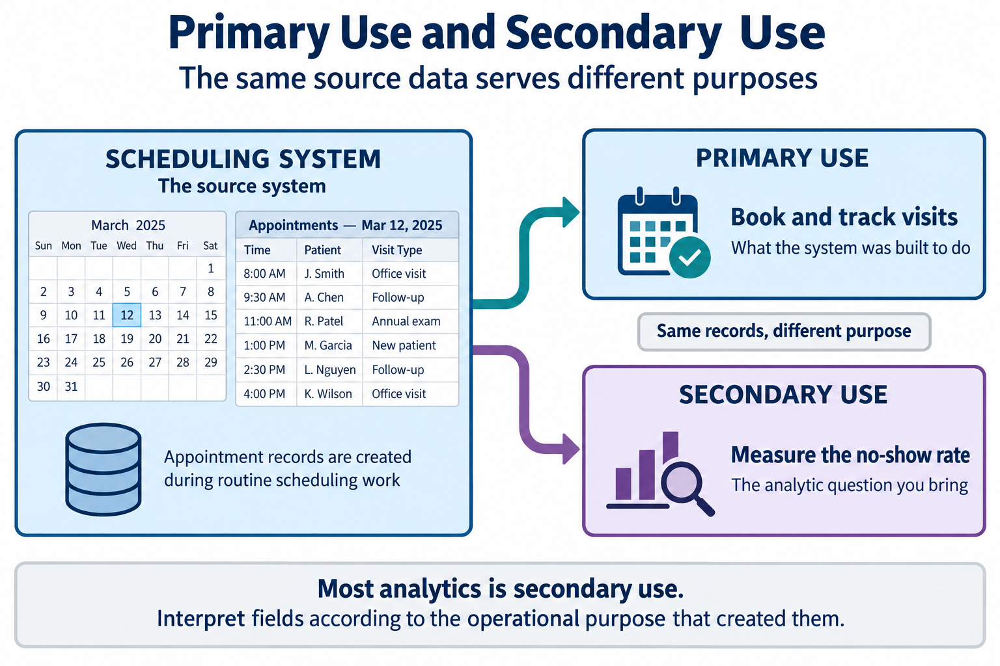
Almost all analytics is secondary use. The data was built to run an operation, not to answer your question. Always ask what the field meant to the person who created it before you trust what it means to you.
Data does not always stay inside the organization that created it. A health information exchange (HIE) is one way records move across organizational boundaries.
- What an HIE does: lets separate organizations share records electronically when care crosses settings.
- What an HIE does not do: create new clinical data; it moves records already created in source systems.
- Why analysts care: reconciliation across systems is only possible if those records can be seen in one analytic workflow.
Federal interoperability rules now require certified systems to make this kind of exchange technically possible and prohibit blocking it (Office of the National Coordinator for Health Information Technology, 2020).
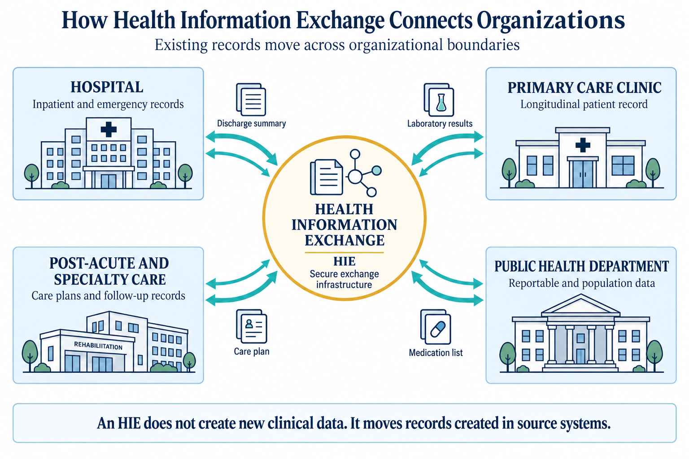
Not every source sits inside your organization. Public agencies publish data built for secondary use from the start, including population-health surveys and county estimates that let you compare your patients to a wider world.
Two external sources used later in this book are:
datasets/PH1_places_county_wide.csv(CDC PLACES county estimates), used in Chapter 11 for external benchmarking.datasets/PH2_brfss2022_teaching_extract.csv(BRFSS weighted adult sample), used in Chapter 7 for survey-weight concepts.
Before you compare any external benchmark with your internal metric, confirm five alignment checks:
- Measure definition
- Population
- Time period
- Geography
- Unit of analysis
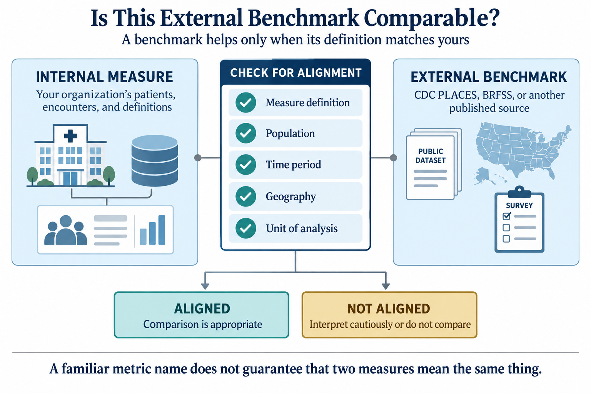
Dimensions describe, facts record
Healthcare data falls into two broad shapes, and telling them apart early will save you later. A dimension table describes the stable actors in the system: who the patient is, which provider they see, which facility they visit, which payer covers them, where they live. A fact table records the events those actors take part in: an appointment, an emergency visit, a claim, a survey response. Dimensions answer “who and where.” Facts answer “what happened, and when.” Chapter 5 returns to this distinction in depth and shows how keys link the two. For now, learn to recognize the shape of a table on sight.
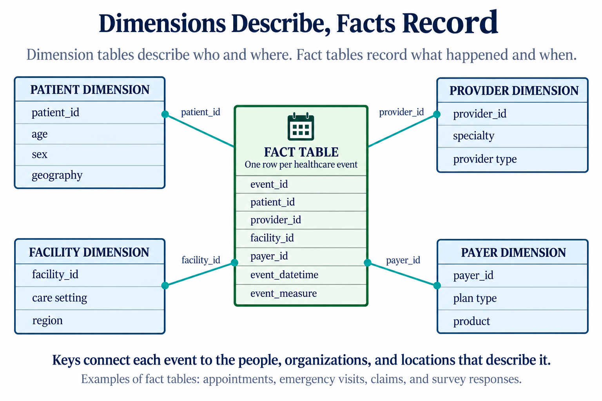
Walkthrough: map the teaching datasets to the system
The datasets in datasets/ are a small model of a real
health system. Open a few of them and place each one on the map of
settings, stakeholders, and source systems. You do not need to compute
anything yet. The goal is to read a table and say where it came
from.
Start with the dimension tables. Open
datasets/DS1_patient_dim.csv. It has one row per patient
(12,000 in total) and columns like patient_id,
payer_primary_id, and pcp_provider_id. Notice
that it does not record any event. It describes people. Open
datasets/DS1_facility_dim.csv (18 rows) and
datasets/DS1_payer_dim.csv (8 rows). Same shape: one row
per actor, no events. These are dimensions.
Now open a fact table.
datasets/DS2_appointments_clean.csv has one row per
scheduled visit (36,000 rows), with appointment_datetime,
lead_days, and no_show_flag. Every row is an
event. Compare datasets/DS3_ed_throughput_clean.csv, where
each row is an emergency visit with
door_to_provider_minutes and
left_without_being_seen_flag, and
datasets/DS5_claim_header_clean.csv, where each row is a
submitted claim with allowed_amount_usd and
denial_flag. Different settings, different columns, but the
same shape: one row per event.
In Table 1 and Table 2, each teaching dataset is placed on the map. Read them as a translation between a file on disk and a part of the real system.
| Dataset | Care setting | Source system |
|---|---|---|
| DS1 patient dim | (reference data) | EHR master index |
| DS1 facility dim | (reference data) | facility registry |
| DS1 payer dim | (reference data) | contract system |
| DS2 appointments clean | ambulatory clinic | scheduling system |
| DS3 ED throughput clean | emergency department | ED tracking board |
| DS5 claim header clean | billing / revenue cycle | claims platform |
| DS6 survey responses clean | patient experience | survey vendor |
| DS7 registry clean | care management | population registry |
| Dataset | Primary stakeholder | One row is |
|---|---|---|
| DS1 patient dim | all | a patient |
| DS1 facility dim | operations | a facility |
| DS1 payer dim | finance | a payer/plan |
| DS2 appointments clean | operations, access | a scheduled visit |
| DS3 ED throughput clean | operations, clinical | an emergency visit |
| DS5 claim header clean | finance | a submitted claim |
| DS6 survey responses clean | clinical, leadership | a survey response |
| DS7 registry clean | population health | a patient in a program |
The dataset names in these two tables are shortened display labels
for readability; the exact file names appear in the walkthrough text
above and in the chapter metadata under datasets_used.
Two things are worth noticing in Table 2:
- Dimension tables have no single setting because they describe actors that appear across all settings.
- The “one row is” column is the most important habit in this chapter. Naming what one row represents tells you the table grain, which decides what you can count and what you cannot.
Chapter 5 gives that habit its formal name and rules.
The volume differs as much as the content. Figure 10 counts the
records in each fact table, drawn straight from the files in
datasets/. A busy billing system produces far more rows
than a patient survey, and that imbalance shapes what you can measure in
each setting.
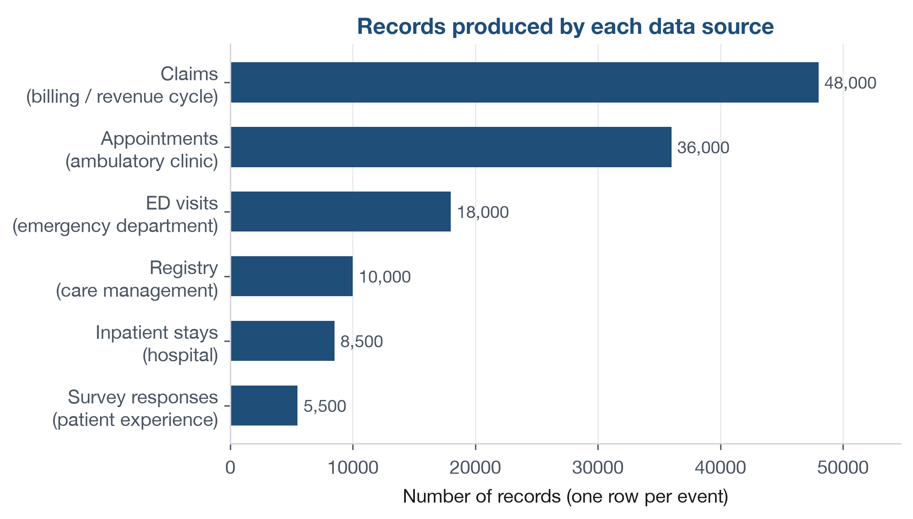
Open datasets/DS6_survey_responses_clean.csv and
datasets/DS7_registry_clean.csv, then create a one-page
source-map worksheet with four columns: File,
Dimension or fact, One row is, and
Primary stakeholder question.
- Fill one row for
DS6_survey_responses_clean.csv. - Fill one row for
DS7_registry_clean.csv. - Add one continuity note: open
datasets/DS4_inpatient_clean.csvand write one sentence naming the first handoff field you would check to confirm a safe post-discharge transition.
Keep your worksheet to six bullets or fewer. The answer key is at the end of the chapter.
The same real-world event often appears in more than one source system, described differently each time. A patient admitted through the emergency department shows up in the ED tracking board as a visit with a disposition of “admit,” and again in the inpatient system as a discharge record, and again in the billing platform as one or more claims. None of these is wrong. They are three source systems recording three views of one hospital stay, each for its own primary use. Reconciling those views is a real analytic task, and it is why an analyst must know source systems, not just files. You will meet this problem directly when you join tables in Chapter 8.
Figure 11 draws exactly that. One hospital stay leaves a trace in three systems, each built for its own primary use and describing the event in its own terms. The analyst’s job is to recognize that these are three views of one event, and to reconcile them rather than mistake them for three separate events.
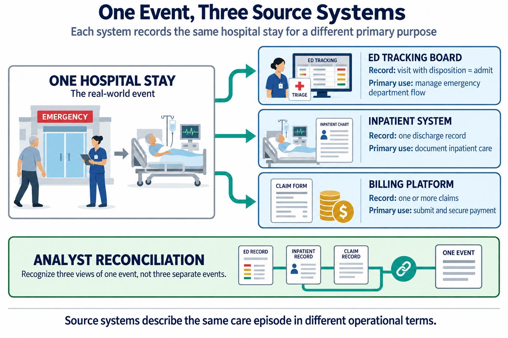
The following is an illustrative scenario, not a specific organization. A payer analyst is asked why the plan’s “avoidable emergency visit” rate has jumped in one quarter. The number is real, but the cause is not clinical. A neighboring urgent care center has closed, and its former patients are now arriving at the emergency department instead. The data source has not changed, but the system feeding it has. The lesson holds: a shift in the numbers often reflects a shift in the system that produced them, not a shift in patient behavior. Always ask what changed upstream before you conclude what changed in care.
Return to the opening question about diabetic follow-up. You now have a practical sequence: identify which source systems hold the relevant handoff fields, name the stakeholder-specific question, and verify what one row represents before you count anything. That sequence turns a broad question into an auditable analytic workflow.
- Patients move through a continuum of care settings, and most data problems appear at the handoffs between settings, not inside one setting.
- Every dataset serves several stakeholders, including regulators who can tie a metric’s definition to payment; the same field can mean something different to each one.
- Data is created in a source system for a primary use, and analytics is almost always a secondary use it was not designed for.
- Dimension tables describe the stable actors; fact tables record the events. Naming what one row represents is the analyst’s first move.
- Reading a table means knowing where it came from, and which stakeholder’s question it can and cannot answer, before you compute anything from it.
- List the four care settings named in this chapter. For each, name one column you would expect to find in its data and one you would not.
- Choose any three datasets in
datasets/. For each, state whether it is a dimension or a fact table and what one row represents. - A
denial_flagindatasets/DS5_claim_header_clean.csvmarks a claim the payer refused to pay. Explain in two sentences why this field is a poor measure of clinical quality, using the idea of primary versus secondary use. - Pick one stakeholder from Table 2 and write one question they would ask that could be answered with the teaching datasets, and one they could not.
- A colleague reports that emergency visits rose 20 percent last month and concludes that patients got sicker. Give two alternative explanations that involve the system rather than the patients.
- Open
datasets/DS4_inpatient_clean.csv. For a discharge wheresnf_discharge_flagis 1, name one continuity risk at that handoff and one other field in the file you would check first. - Explain why the same
readmission_30d_flagindatasets/DS4_inpatient_clean.csvcan be read correctly by a clinician, a care manager, and a regulator such as CMS, yet mean something different to each. Use the ideas of stakeholder and continuum of care in your answer.
Try It. A strong worksheet answer includes three parts:
DS6_survey_responses_clean.csv- fact; one row is one completed survey response linked to a visit; primary stakeholder question: are patients reporting a positive care experience (for example,recommend_top_box_flag)?DS7_registry_clean.csv- registry snapshot used as a fact-style operational list; one row is one patient currently tracked in a program with current gap/risk status; primary stakeholder question: which patients need outreach now (for example, highcare_gap_countor highrisk_tier)?- Continuity note from
DS4_inpatient_clean.csv- first checkfollowup_within_7d_flag(ordischarge_disposition) to verify whether a discharge handoff was closed in the next setting.
Selected exercises.
- The four settings are ambulatory clinic, emergency department,
hospital (inpatient), and care management. An appointment file has
no_show_flagbut notriage_acuity, while an emergency file hastriage_acuitybut nono_show_flag. - For example:
DS1_facility_dimis a dimension (one row per facility);DS3_ed_throughput_cleanis a fact table (one row per emergency visit);DS5_claim_header_cleanis a fact table (one row per submitted claim). - The
denial_flagexists for a primary use, routing unpaid claims to a rework queue, so it records a payer payment decision, not care quality. Read as a quality measure (secondary use), it confuses “the payer said no” with “the care was wrong.” - For example, a finance leader can ask which payers denied the most
claims last quarter (answerable from
DS5_claim_header_clean), but cannot ask from these datasets whether a denial was clinically justified. - Two alternatives include a nearby urgent care or clinic closure that redirected patients to the emergency department, or a coding/registration change that altered how visits were counted; both are system shifts, not direct evidence that patients got sicker.
- A discharge to a skilled nursing facility carries continuity risk if
the discharge summary never reaches SNF clinicians or if no primary-care
follow-up is scheduled; check
followup_within_7d_flagnext. readmission_30d_flagis one column, but a clinician reads discharge-plan durability, a care manager reads follow-up completion (continuum handoff), and CMS reads payment impact under a regulatory formula. The field stays the same; the stakeholder question changes.
- Centers for Medicare & Medicaid Services. (n.d.). Hospital Readmissions Reduction Program. Retrieved September 20, 2026, from https://www.cms.gov/medicare/quality/value-based-programs/hospital-readmissions
- Coleman, E. A. (2003). Falling through the cracks: Challenges and opportunities for improving transitional care for persons with continuous complex care needs. Journal of the American Geriatrics Society, 51(4), 549-555. https://doi.org/10.1046/j.1532-5415.2003.51185.x
- Haggerty, J. L., Reid, R. J., Freeman, G. K., Starfield, B. H., Adair, C. E., & McKendry, R. (2003). Continuity of care: A multidisciplinary review. BMJ, 327(7425), 1219-1221. https://doi.org/10.1136/bmj.327.7425.1219
- Institute of Medicine. (2001). Crossing the quality chasm: A new health system for the 21st century. National Academies Press.
- National Committee for Quality Assurance. (n.d.). HEDIS and performance measurement. Retrieved September 20, 2026, from https://www.ncqa.org/hedis/
- Office of the National Coordinator for Health Information Technology. (2020). ONC’s Cures Act final rule. U.S. Department of Health and Human Services. https://www.healthit.gov/curesrule/
- Shortliffe, E. H., & Cimino, J. J. (Eds.). (2014). Biomedical informatics: Computer applications in health care and biomedicine (4th ed.). Springer.
- Healthcare system
- The loose network of settings, staff, and software through which care is delivered.
- Care setting
- The place and mode in which care happens, such as an ambulatory clinic, an emergency department, a hospital, or a care-management program.
- Patient
- The person who receives care; the party whose health the whole system exists to serve.
- Provider
- A party that delivers and documents care, such as a hospital, clinician, or pharmacy.
- Payer
- A party that finances care and administers coverage and payment, such as a private insurer, a self-funded employer, Medicare, or Medicaid.
- Continuum of care
- The sequence of settings a patient moves through over time, from prevention and primary care through post-acute care; most continuity risk sits at the handoffs between them.
- Stakeholder
- Anyone with a stake in what the data says, such as a clinician, operations manager, finance leader, public health team, patient, or regulator.
- Regulator
- A stakeholder, such as CMS or NCQA, that defines how a measure must be calculated and can tie payment or a public rating to the result.
- Source system
- The software where a piece of data is first created, such as a scheduling system, electronic health record, or billing platform.
- Health information exchange
- The electronic infrastructure that lets separate organizations share a patient’s records when care crosses organizational lines.
- Primary use
- The operational job a piece of data was built to do in its source system.
- Secondary use
- Any later use of the data to answer a question it was not originally designed for, which includes most analytics.
- Dimension table
- A table that describes the stable actors in the system, with one row per actor and no events.
- Fact table
- A table that records events, with one row per event and a time attached.
The Institute of Medicine was renamed the National Academy of Medicine in 2015; works published under the earlier name keep that attribution.↩︎